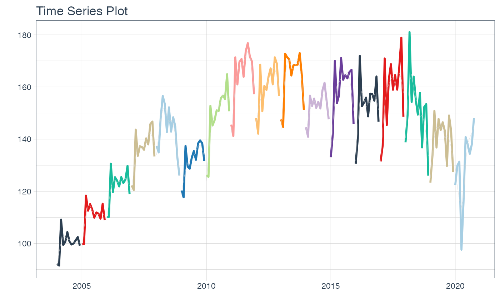

What are tabs? 🤔
✏️ A tab is a design pattern where content is separated into different panes, and each pane is viewable one at a time.

How to generate tabs? 🗂️
🔹 In order to generate the tabs above, the following chunks were necessary:

🔎 As it can be seen, this is not so difficult. However, what if we wanted to generate 16 tabs instead of 4?

Using a tidy approach, an automatic tab generation 🧙 can be performed by nesting the objects to include in each tab. Let’s see an example.
Data 📊
For this example, time series data from the Argentine monthly economic activity estimator (EMAE) is used. This data is available in the sknifedatar package 📦.
Libraries 📚
#devtools::install_github("rafzamb/sknifedatar")
library(sknifedatar)
#devtools::install_github("gadenbuie/xaringanExtra")
library(xaringanExtra)
library(lubridate)
library(timetk)
library(dplyr)
library(tidyr)
library(purrr)
emae <- sknifedatar::emae_series Nested dataframes 📂
🔹 The first step is to generate a nested data frame. It includes a row per economic sector.
nest_data <- emae %>%
nest(nested_column = -sector)
nest_data## # A tibble: 16 x 2
## sector nested_column
## <chr> <list>
## 1 Comercio <tibble [202 × 2]>
## 2 Enseñanza <tibble [202 × 2]>
## 3 Administración pública <tibble [202 × 2]>
## 4 Transporte y comunicaciones <tibble [202 × 2]>
## 5 Servicios sociales/Salud <tibble [202 × 2]>
## 6 Impuestos netos <tibble [202 × 2]>
## 7 Sector financiero <tibble [202 × 2]>
## 8 Minería <tibble [202 × 2]>
## 9 Agro/Ganadería/Caza/Silvicultura <tibble [202 × 2]>
## 10 Electricidad/Gas/Agua <tibble [202 × 2]>
## 11 Hoteles/Restaurantes <tibble [202 × 2]>
## 12 Inmobiliarias <tibble [202 × 2]>
## 13 Otras actividades <tibble [202 × 2]>
## 14 Pesca <tibble [202 × 2]>
## 15 Industria manufacturera <tibble [202 × 2]>
## 16 Construcción <tibble [202 × 2]>👀 To better understand the format of nest_data, the "nested_column" variable is disaggregated below. By clicking on each sector, it can be seen that 👉👉 each nested column includes data for the series of the selected sector. In the first row, data corresponds to the monthly activity estimator from 2004-01-01 to 2020-10-01 for the ‘Commerce’ sector.
Time series plots 🌠
👉 The evolution of each series can be observed by using a tab for each sector. This allows the visualization to be much clearer 🙌, allowing the reader to focus on each series, without having to view multiple plots of the same type.
nest_data <-
nest_data %>%
mutate(ts_plots = map(nested_column,
~ plot_time_series(.data = .x,
.date_var = date,
.value = value,
.color_var = year(date),
.interactive = FALSE,
.line_size = 1,
.smooth_color = 'lightgrey',
.smooth_size = 0.1,
.legend_show = FALSE
)))
nest_data## # A tibble: 16 x 3
## sector nested_column ts_plots
## <chr> <list> <list>
## 1 Comercio <tibble [202 × 2]> <gg>
## 2 Enseñanza <tibble [202 × 2]> <gg>
## 3 Administración pública <tibble [202 × 2]> <gg>
## 4 Transporte y comunicaciones <tibble [202 × 2]> <gg>
## 5 Servicios sociales/Salud <tibble [202 × 2]> <gg>
## 6 Impuestos netos <tibble [202 × 2]> <gg>
## 7 Sector financiero <tibble [202 × 2]> <gg>
## 8 Minería <tibble [202 × 2]> <gg>
## 9 Agro/Ganadería/Caza/Silvicultura <tibble [202 × 2]> <gg>
## 10 Electricidad/Gas/Agua <tibble [202 × 2]> <gg>
## 11 Hoteles/Restaurantes <tibble [202 × 2]> <gg>
## 12 Inmobiliarias <tibble [202 × 2]> <gg>
## 13 Otras actividades <tibble [202 × 2]> <gg>
## 14 Pesca <tibble [202 × 2]> <gg>
## 15 Industria manufacturera <tibble [202 × 2]> <gg>
## 16 Construcción <tibble [202 × 2]> <gg>📽 First, a column called “ts_plots” is added, where we store the visualizations of the time series. For this we apply the function “plot_time_series” on each series stored in the column “nested_column” through the function "map". The function plot_time_series is included on the timetk package 📦. One of the series is displayed below.Notice that we are using lubridate package to add different colors for each year. This allows us to infer if seasonality is present in each time series, although we will analyse this later on this article.
nest_data %>% pluck("ts_plots",1)
Perfect, but … if we wanted to graph all the time series, how could we do it? 🤔
The “automagic_tabs” function of the sknifedatar package was created for this. It receives 3 main arguments:
input_data: The nested dataframe that we have created 💾, in our case, the “nest_data” object.
panel_name: The name of the column of the nested dataframe where the series names are, these names will be the titles of each tabs 📝. In our case, “sector”.
.output: The name of the column of the nested dataframe that stores the graphs to be displayed 📈. In our case, “ts_plots”.
🛠 Additional arguments: you can specify the width of the set of panels in “.layout”, 👉👉👉 in addition to being able to specify all the parameters available on rmarkdown chunks 🙌 (fig.align, fig.width, …)
🔹 Let’s see the application below, first we invoke the “use_panelset" function from the xaringanExtra package 📦 and then the”automagic_tabs" function.
xaringanExtra::use_panelset()
`r automagic_tabs(input_data = nest_data, panel_name = "sector", .output = "ts_plots",
.layout = "l-page", fig.heigth=1, fig.width=10)`
⚠ Note something important, 👉👉👉 the function does not run in a chunk, it is invoked “inline” (or an r function between apostrophes) within the Rmarkdown document. Below is the complete code:
#---
#title: "automagic_tabs"
#author: "sknifedatar"
#output: html_document
#---
#
#```{r}
#library(sknifedatar)
#library(timetk)
#```
#
#```{r}
#emae <- sknifedatar::emae_series
#
#nest_data <- emae %>%
# nest(nested_column = -sector) %>%
# mutate(ts_plots = map(nested_column,
# ~ plot_time_series(.data = .x,
# .date_var = date,
# .value = value,
# .interactive = FALSE,
# .line_size = 0.15)
# ))
#```
#
#```{r}
#xaringanExtra::use_panelset()
#```
#
#`r automagic_tabs(input_data = nest_data, panel_name = "sector", .output = "ts_plots")`🔹 Copy the code above, paste it into a new Rmarkdown file, and hit knit the document to get the tabs.